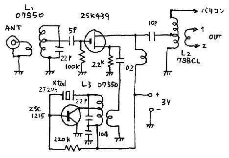
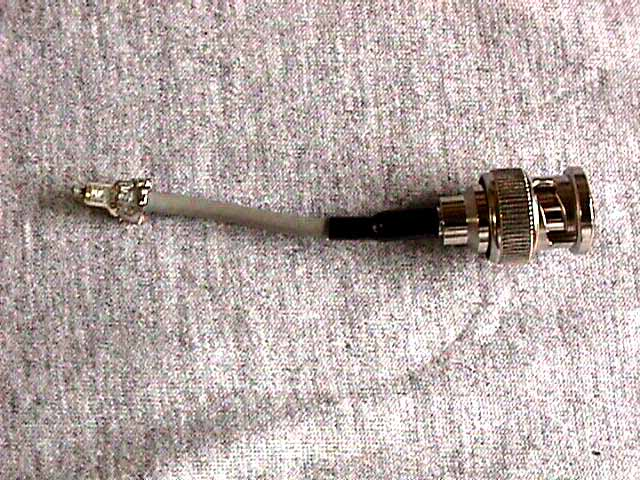

| ・戻る |
#251 100円ラジオ用MU受信クリスタルコンバータ
MUレーダーは京都大学超高層電波研究センターが運営するレーダーで、周波数46.5MHz、出力1MW(メガワット)というものです。 ふだん は大気の研究に使われていますが大きな流星群がある時期、流星の電波観測が行われます。
本機はMUレーダーが流星観測用に使用される際に流星からの反射エコーを受信するためのもので、流星の電波観測の入門用として最適です。
回路図を第１図に示します。入力周波数とローカル発振周波数が違うほかは#２４６ 100円ラジオ用50MHz受信クリスタルコンバータ と変わりません。

本機は100円ラジオに組み合わせるためコストを最大限絞り込んでいます。そのため水晶発振子もイレギュラーな選択をしております。
ここで使用している27.205MHzという水晶は昔流行ったCB用のものです。
この水晶は3倍オ−バト−ン型のものですから、基本波はその1/3である9.068MHzです。 この水晶を5倍オ−バト−ンで発振させると 45.342MHzで発振するはずです。 現実には45.341MHzで発振しました。
一般的にいうと、3倍オ−バト−ンの水晶を5倍オ−バト−ンで発振させるのは同調回路を5倍の周波数にあわせるだけでとくに問題なく発振してくれ ます。ただし周波数は表示の5/3より若干ずれてしまいます。
クリスタルコンバータが出来て100円ラジオに組み込みが完成したとしてもどこが46.5MHzなのか判りません。 MUレーダーは観測期間中は 常に発射されていますが、流星による反射エコーは流星が出現しないことには受信出来ませんからバリコンをどこにまわしてもまずなにも聞こえないと思いま す。 なにも聞こえない電波に同調を取るにはどうしたら良いでしょうか。
SGを使うことができれば46.5MHzのAMモードの信号で調整することになりますが、SGがない時はつぎの手法によってダイアル面の設定をし てください。
MUレーダーの46.5MHzからローカル発振周波数の45.341MHzを差し引きますと1.159MHzという数字が得られます。要するに 100円ラジオで1,159kHzを聞けば良いことがわかります。
そこで事前に100円ラジオで放送を聞いておくことが必要だったのです。 関東地方の例を述べてみましょう。
まず文化放送の1,134kHzを聞いてください。ダイアルにその場所をチェックします。 次に日本放送の1,242kHzを聞きます。その場所にも
チェックしてください。
文化放送1,134kHzと日本放送1,242kHzの差は108kHzあります。 そして文化放送とMUレーダーの1,159kHzの差は 25kHzです。 そして、この25kHzと文化放送と日本放送の差の108kHzの割合は、25/108=0.231となります。 すなわち文化放送と 日本放送のチェック点の間隔の文化放送から2.3/10(約1/4)だけ日本放送の方に回した点がMU レーダーの受信ポイントであることが判ります。ダイアルのこの場所をとりあえず粘着テープ等で固定して下さい。
関当地方以外でもその土地の放送局の電波を利用して1,159kHz を探してください。
製作に関しては#246 100円ラジオ用50MHz受信クリスタルコンバータを御覧下さい。 ただし製作に入る前に必ず先に述べた周波数の設定のためのダイアルのチェックをして おいてから製作に入ってください。
アンテナコネクタは小さいですが同軸ケーブル1.5D2V用です。使いはじめは非常にかたいですからホットボンドで固める前に何回か抜き差しして 柔らかくしておいてください。
(1)調整に入る前に注意事項があります。 それは100円ラジオのコイル及びバ リコンに付いているトリマコンデンサにはいっさい手を触れないということです。
(2)まずローカル発振の回路が正常に働いているか調べてください。#006のRFプローブを使うと便利です。 発振コイルのこアの位置は大体面 位置から2-3mm入った所です。入れ過ぎると発振が止まってしまう性質があります。
(3)この状態でアンテナ(アンテナについては後に述べます)をつないでみてください。多分ノイズの他はなにも聞こえないはずです。
(4)入力のL1、07S50と出力のL2、07S-BCLのコアを回して聞こえているノイズが一番大きく聞こえる所にセットしてください。 な お、ローカル発振用のコイルL3は発振していさえすればそのままで結構です。
実際にこの方法でダイアルをセットしてからSGで46.5MHzを出してみると、見事に受信できることが判りました。感度は-100dBmですか ら結構高感度でした。
あとは流星群が出た時実際に受信してみてダイアルを微調整してください。ダイアルを粘着テープ等で固定しておけば後々同調を取る手間が省け、MU レーダー専用受信機になります。
MUレーダーの信号は非常に強いのでアンテナはかなり簡単なものでも受信することが出来ます。
しかし、ダイポールアンテナ位は作られた方が受信が確実になります。(もちろん八木アンテナ、ヘンテナ等であれば申し分ありません)
全長3.16mの銅線(裸線でも被覆線でも可)を半分にしてその中央部に同軸ケーブルを取り付けます。
同軸ケーブルが1.5D2Vの場合は、他端を直接アンテナコネクタのプラグ(オス)にハンダ付けしてください。3D2V以上のケーブルの場合は一旦
BNCのプラグを取り付けます。 コンバ−タ側のプラグに1.5D2Vを取り付け、他端にBNCのプラグを取り付けます。二つのコネクタを変換プラグ、
BNC-JJで繋いでください。二つのコネクタを使うのが面倒な場合は同軸ケーブル同志を直接ハンダ付けしてしまっても結構です。
完成したアンテナは室内に設置してもいいですが、できれば屋外に設置された方が感度は上がります。
実際に流星のエコーを聞いてみると、「ボー」といつた感じの音で、目で見るのとは違った感覚が感じられます。ぜひ眼視観測と平行して観測をしてみ てください。 目で見えたのに電波では聞こえなかったり、反対に目に見えないのに電波が聞こえたりします。
その現象を「何故だろう?」と感じたら貴方は「科学への第一歩」を踏み出したことになります。ぜひ、流星の電波観測の仲間に入ってくださることを 期待します。
なお、MUレーダーの電波発射スケジュールは mu@kurasc.kyoto-u.ac.jpに 問い合わせれば判りますが、FCZのホームページでもお伝えすることにしていますから参照してください。(時間に余裕のある場合は「お知らせ」のぺ−ジ に、余裕の無い場合は「ラグチュウル−ム」に書き込みます。)